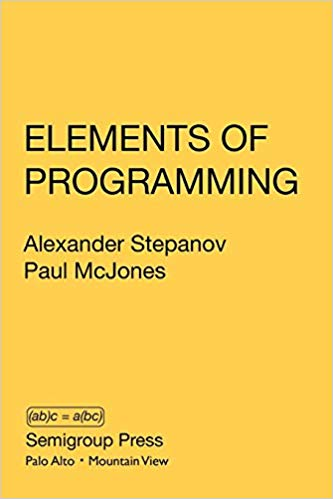

Mircea Baja - 1 May 2020

# Irregularity in Generic Programming

## Part I (of three): Lists (and vectors)

???

This is part I out of three talks intended (mainly) for (C++)
developers.

The common original idea of these talks is simply that diversity in
data structures and algorithms results in generic solutions being
quirky and not universal (the irregularity conjecture), including an
exploration of the related philosophical and mathematical ideas.

In this first part I'm trying to give an example of diversity in data
structures and if nothing else, by the end of it you'll know more than
you'll ever need to know about linked lists (and why vector is most of
the time a better choice).

---
class: large-points

# Agenda: Lists
- A linked list is just a kind of a linked list.
- The naming quirks: why naming is hard.
- Hyperbolic usage conjecture.
- Detour: why vectors are good, common myths

---

class: large-points

# The vector kind theorem

- Theorem: the vector is just a kind of vector (paraphrasing Alex Stepanov)

- Lemma: a linked list is just a kind of linked list

---

# Single linked


# Double linked


---

# Linear


# Circular


---

# Header - minimalistic

- Pointer to head


- Pointer to tail


- or Not minimalistic

---

# Links to local parts

- No


- Yes


---

# Dummy node


- Meaning (end iterator, none/simplify empty list case)
- Location (heap, header)
- If on the heap: always present?
- Can dereference/does it have a value?

---
class: large-points

# More

- Iterators - minimalistic
- List size
- Operations available - e.g. constant time `push_back()`
- Splicing - partial/total
- Iterator from reference to value
- Permanent end iterator
- Forward/Bidirectional iterator
- Intrusive/non-intrusive
- Node ownership
- Allocators
- Thread safety

---
class: large-points

# Fast reverse


- Meaning of node pointers is found during traversal (meaning is fixed only for
  the dummy node)

---

# Single linked basic


- `std::forward_list`
- No constant time `push_back()`
- Can be used to implement a typical stack/FILO, but not a typical queue/FIFO
- Note: comparing for end slightly different from comparing two iterators

---

# Single linked circular


- Two choices on accessing tail from the iterator:
  - Directly: as above
  - Indirectly: through the header

---

# Single linked first-last


---

# Double linked linear


---

# Double linked circular


---

# Double linked with allocated dummy node


- `std::list` in Visual C++ 2017/2019

---

# Allocated dummy node


--

```cpp
static_assert(std::is_nothrow_default_constructible_v<std::list<int>>,
  "Default constructor may throw");

static_assert(std::is_nothrow_move_constructible_v<std::list<int>>,
  "Move constructor may throw");

// both assert in Visual C++ 2017/2019
```

---

# Double linked with dummy node in header


- `move` invalidates end
- another `std::list` implementation option gcc/clang

---

# Books


<table>
<tr>
<td></td>
<td></td>
</tr>
</table>


---
class: large-points

# Linked list summary

- Despite ignoring many additional choices: there are many kinds of linked list
- There are more differences than things they all have together
- They all have a use case
- E.g. single linked lists: the price to pay for constant time `push_back()` either: iterator not
  minimalistic OR header not minimalistic
- It is not a closed system: I doubt we can say confidently that there is no
  other linked list variation

---

# Implementing one

```cpp
template<typename T>
class dl_list {
  struct node;
  struct links {
    node * next_;
    node * prev_;
  };
  struct node : public links {
    T value_;
    //...
```

- A double linked list
- Circular
- With dummy node in the header
- Non-intrusive (nodes are provided by the list class)
- Nodes are allocated on the heap (no custom allocator)
- List owns the nodes
- No cached size

---
class: large-points

# Type naming quirks

- A lot of info on implementation details is required to provide a complete type description
- That information has to be encoded somewhere
- Encoding in the name is not scalable
- Encoding as type parameters is not scalable
- Dealing with all the details leads to cognitive load
- We're equipped with a large common vocabulary for the physical world (only)
- A pragmatic solution: reduced vocabulary
- `std::list` and `std::forward_list`
- `std::shared_ptr` and `std::unique_ptr`
- Open vs. closed type systems

---
class: large-points

# Hyperbolic usage conjecture

- A small number of built-in types used a lot
- A large number of user defined types used once or twice


---

# Detour: vectors rule

---

# List representation


# List memory layout


---

# TSO for x86


- Lags for access to shared memory

---

# Arrays


---
# Iterators: generalized pointers

- "points to"/hardware view


- "points between"/Sean Parent view


---

# Vector: resizable array


---

# Push back


- strong guarantee
- https://isocpp.org/files/papers/N4055.html
- common strategies: 2x (gcc) or 1.5x (Microsoft)
- excess memory usage: 38.6% or 21.6% respectively
- resulting in amortized O(1)

---

# List vs. vector


---


# List vs. vector


---

# Hash table vs. array


---

# Are lists useful?

---

# Questions?

